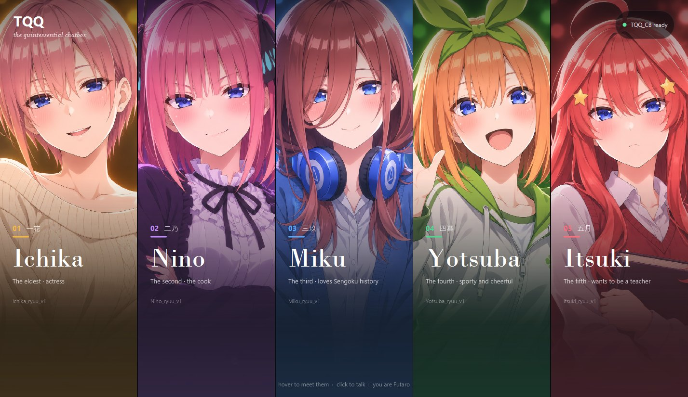

01Featured case study
Five fine-tuned models, one offline app
TQQ Chatbox
Character chatbots usually run one model in five costumes: they break character, invent memories and need the cloud. I wanted each character to be her own fine-tuned model, faithful to the story, running entirely on a laptop.

01Data
Every episode’s subtitles became one master transcript, cut into each character’s real scenes, plus 80 to 212 hand-written chats per character covering facts, traps and “I’m not sure”.
02Training
QLoRA on Llama-3 8B with Unsloth on a free Colab T4: 4-bit, rank 16, two epochs. Each model is merged and exported as an 8.5 GB GGUF file for Ollama.
03Safety checks
Before you see a reply, word rules and a phi4-mini judge check it for wrong facts and invented memories, and quietly ask the model again when it slips.
- 69/70invented memories refused
- 0/70false alarms in testing
- 83–11best blind test against the untuned model
- 5models published on Hugging Face